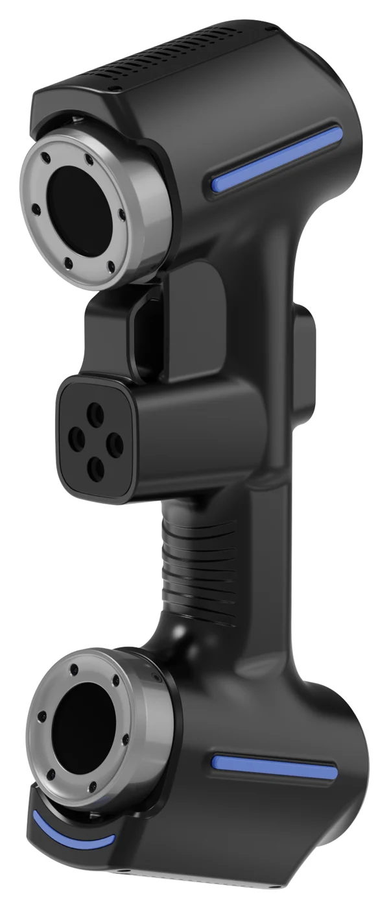

| Note for developers | Also show the three product images from `/img/products/` inline in the comparison section |
|---|
Buying a 3D scanner is a significant investment, and spec sheets can be confusing. As the Distributor of JINUOSH Vertex 3D scanners in India, we use these scanners every day in our own service work. Here's a practical guide to choosing the right model.
First, decide what you will scan
Before comparing numbers, answer these questions:
- How big are your typical parts? Hand-sized parts, engine blocks, vehicle panels, or full vehicles and moulds?
- What do you need the data for? Reverse engineering, quality inspection, or both?
- Where will you scan? In a lab, on the shop floor, or at customer sites?
- How often? Occasional projects, or daily production inspection?
The answers point clearly to one of the three Vertex models.
The three models at a glance
| Vertex3D | Vertex3D Pro | Vertex Tracker | |
|---|---|---|---|
| Type | Handheld blue-laser scanner | Handheld blue-laser scanner | Optical-tracking scanning system |
| Laser lines | 26 crossed blue lines | 50 crossed blue lines | Tracker-based, no markers needed on the part |
| Highest precision | 0.020 mm | 0.020 mm | 0.025 mm |
| Max scanning speed | 5,400,000 measurements/s | 7,100,000 measurements/s | 7,100,000 measurements/s |
| Max scanning field | 650 × 550 mm | 650 × 550 mm | 1100 × 800 mm |
| Extra modes | Precision (7 lines), deep-hole (1 line) | Precision (7 lines), deep-hole (1 line) | Precision (7 lines), deep-hole (1 line) |
| Best for | Small to medium parts, reverse engineering, first-time buyers | Faster capture of medium to large parts, higher throughput | Shop-floor inspection, large parts, fast setup without targets |
Specifications from the manufacturer; subject to change. Full details are on our products page.
Vertex3D: the versatile all-rounder
The Vertex3D suits engineering service bureaus, design teams and colleges that scan a wide variety of parts. Its 26 blue laser lines capture fine detail on machined and cast surfaces, and the deep-hole mode reaches inside bores and pockets.
Choose it if: you mostly scan parts up to around a metre, you are building in-house reverse engineering capability, and you want strong accuracy at an accessible price.
Vertex3D Pro: more speed for bigger jobs
The Pro doubles the laser lines to 50 and raises the measurement rate. In practice that means fewer passes and faster scanning of large surfaces such as body panels, moulds and big castings.
Choose it if: your parts are often large, you scan every day, or turnaround time matters to your customers.
Vertex Tracker: inspection on the shop floor
The Tracker uses an optical tracking system, so the scanner's position is followed by the tracker rather than by reference markers stuck on the part. Setup is much faster, which matters when you inspect many parts or large assemblies on the shop floor. The larger scanning field and volumetric accuracy suit quality departments.
Choose it if: inspection is your main use, you measure large parts or many parts a day, and sticking targets on parts slows you down.

Don't forget the computer
3D scanning is demanding on hardware. The manufacturer recommends Windows 10 or later (64-bit), an NVIDIA RTX-class GPU (RTX 4060 or higher) with 8 GB+ VRAM, a recent Intel Core i7 and 32 GB+ RAM. Budget for a suitable workstation or laptop.
Questions to ask any scanner supplier
- Can I see a live demo on my own part?
- What training is included, and is it available locally?
- Who provides warranty service and calibration in India?
- What software is included for scanning, and what will I need for reverse engineering or inspection?
- Can the supplier help with my first projects?
Why buy from VShark Solutions?
We don't just sell scanners; we run a 3D scanning and reverse engineering service with them. That means:
- Demos on your parts, at our Coimbatore facility or at your site
- Advice from engineers who use the scanners on real projects daily
- Installation at your site and hands-on training when the scanner is delivered
- A 12-month warranty (standard terms)
- Help getting started with scanning, reverse engineering and inspection workflows